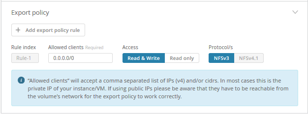
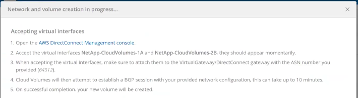

请求文档变更
请求文档变更 在 GitHub 上编辑
在 GitHub 上编辑 提供者指南
提供者指南创建云卷
您可以从 NetApp Cloud Orchestrator 站点创建云卷。
前提条件
在创建第一个云卷之前， AWS 环境必须满足特定要求。对于计划部署云卷的每个 AWS 区域，您必须具有：
-
虚拟私有云（ VPC ）
-
连接到 VPC 的虚拟专用网关（ Virtual Private Gateway ， VGW ）
-
VPC 的子网
-
定义的路由，其中包括要运行云卷的网络
-
也可以选择 Direct Connect 网关
在区域中创建第一个云卷时，您必须具有以下信息：
-
* AWS 帐户 ID* ：一个 12 位数的 Amazon 帐户标识符，不带短划线。
-
* 无类域间路由（ CIDR ）块 * ：未使用的 IPv4 CIDR 块。网络前缀必须介于 /16 和 /28 之间，并且还必须位于为专用网络预留的范围内（ RFC 1918 ）。请勿选择与您的 VPC CIDR 分配重叠的网络。
-
您必须已选择要使用此服务的正确区域。请参见 "选择区域"。
如果尚未配置所需的 AWS 网络组件，请参见 "NetApp Cloud Volumes Service for AWS 帐户设置" 有关详细信息，请参见指南。
-
注意： * 在计划创建 SMB 卷时，您必须具有可连接到的 Windows Active Directory 服务器。您将在创建卷时输入此信息。此外，请确保管理员用户能够在指定的组织单位（ OU ）路径中创建计算机帐户。
输入卷详细信息
完成创建卷页面顶部的字段以定义卷名称，大小，服务级别等。
-
登录到之后 "NetApp Cloud Orchestrator" 此站点包含您在订阅期间提供的电子邮件地址，并且您已拥有 "已选择区域"下，单击 * 创建新卷 * 按钮。

-
从创建卷页面中，选择 * NFS * ， * SMB * 或 * 双协议 * 作为要创建的卷的协议。
-
在 * 名称 * 字段中，指定要用于卷的名称。
-
在 * 区域 * 字段中，选择要创建卷的 AWS 区域。此区域必须与您在 AWS 上配置的区域匹配。
-
在 * 时区 * 字段中，选择您的时区。
-
在 * 卷路径 * 字段中，指定要使用的路径或接受自动生成的路径。
-
在 * 服务级别 * 字段中，选择卷的性能级别： * 标准 * ， * 高级 * 或 * 至尊 * 。
请参见 "选择服务级别" 了解详细信息。
-
在 * 已分配容量 * 字段中，选择所需容量。请注意，可用索引节点的数量取决于分配的容量。
请参见 "选择已分配的容量" 了解详细信息。
-
在 * NFS 版本 * 字段中，根据您的要求选择 * NFSv3* ， * NFSv4.1* 或 * 两者 * 。
-
如果选择双协议，则可以从下拉菜单中选择 * ntf* 或 * unix* ，在 * 安全模式 * 字段中选择安全模式。
安全模式会影响所使用的文件权限类型以及如何修改权限。
-
UNIX 使用 NFSv3 模式位，只有 NFS 客户端可以修改权限。
-
NTFS 使用 NTFS ACL ，只有 SMB 客户端可以修改权限。
-
-
在 * 显示 Snapshot 目录 * 字段中，保留默认值，以便查看此卷的 Snapshot 目录，或者取消选中此框以隐藏 Snapshot 副本列表。
输入网络详细信息（每个 AWS 区域一次性设置）
如果这是您首次在此 AWS 区域创建云卷，则会显示 * 网络 * 部分，以便您可以将 Cloud Volumes 帐户连接到 AWS 帐户：
-
在 * CIDR （ IPv4 ） * 字段中，输入该区域所需的 IPv4 范围。网络前缀必须介于 /16 和 /28 之间。网络还必须处于为专用网络预留的范围内（ RFC 1918 ）。请勿选择与您的 VPC CIDR 分配重叠的网络。
-
在 * AWS account ID* 字段中，输入 12 位数的 Amazon 帐户标识符，不带短划线。

输入导出策略规则（可选）
如果选择了 NFS 或双协议，则可以在 * 导出策略 * 部分中创建导出策略，以确定可以访问卷的客户端：
-
在 * 允许的客户端 * 字段中，使用 IP 地址或无类别域间路由（ CIDR ）指定允许的客户端。
-
在 * 访问 * 字段中，选择 * 读取和写入 * 或 * 只读 * 。
-
在 * 协议 * 字段中，选择用于用户访问的协议（如果卷同时允许 NFSv3 和 NFSv4.1 访问，则选择协议）。

如果要定义其他导出策略规则，请单击 * + 添加导出策略规则 * 。
启用数据加密（可选）
-
如果选择 SMB 或双协议，则可以选中 * 启用 SMB3 协议加密 * 字段对应的框来启用 SMB 会话加密。
-
注意： * 如果 SMB 2.1 客户端需要挂载卷，请勿启用加密。
-
将卷与 Active Directory 服务器（ SMB 和双协议）集成
如果选择 SMB 或双协议，则可以在 * Active Directory* 部分中选择将卷与 Windows Active Directory 服务器或 AWS Managed Microsoft AD 集成。
在 * 可用设置 * 字段中，选择现有 Active Directory 服务器或添加新的 AD 服务器。
要配置与新 AD 服务器的连接，请执行以下操作：
-
在 * DNS 服务器 * 字段中，输入 DNS 服务器的 IP 地址。引用多个服务器时，请使用逗号分隔 IP 地址，例如 172.31.25.223 ， 172.31.2.74 。
-
在 * 域 * 字段中，输入 SMB 共享的域。
使用 AWS Managed Microsoft AD 时，请使用 "Directory DNS name" 字段中的值。
-
在 * SMB Server Netbios* 字段中，为要创建的 SMB 服务器输入 NetBIOS 名称。
-
在 * 组织单位 * 字段中，输入 "CN=Computers " 以连接到您自己的 Windows Active Directory 服务器。
使用 AWS Managed Microsoft AD 时，必须以 "OU=<Netbios_name>" 格式输入组织单位。例如， * OU=AWSmanagedAD* 。
要使用嵌套的 OU ，必须首先将最低级别的 OU 调出到最高级别的 OU 。例如： * OU=thirdlevel ， OU=secondlevel ， OU=FIRSTLEVEL* 。
-
在 * 用户名 * 字段中，输入 Active Directory 服务器的用户名。
您可以使用任何有权在要加入 SMB 服务器的 Active Directory 域中创建计算机帐户的用户名。
-
在 * 密码 * 字段中，输入您指定的 AD 用户名的密码。

请参见 "为 Active Directory 域服务设计站点拓扑" 了解有关设计最佳 Microsoft AD 实施的准则。
请参见 "使用 NetApp Cloud Volumes Service for AWS 设置 AWS 目录服务" 有关使用 AWS Managed Microsoft AD 的详细说明的指南。

您应按照 AWS 安全组设置指南进行操作，以使云卷能够正确地与 Windows Active Directory 服务器集成。请参见 "适用于 Windows AD 服务器的 AWS 安全组设置" 有关详细信息 … -
注： * 使用 NFS 挂载卷的 UNIX 用户将被作为 UNIX root 的 Windows 用户 "root" 进行身份验证，而对于所有其他用户，则被视为 "pcuser" 。在使用 NFS 挂载双协议卷之前，请确保这些用户帐户位于 Active Directory 中。
-
创建 Snapshot 策略（可选）
如果要为此卷创建快照策略，请在 * 快照策略 * 部分中输入详细信息：
-
选择快照频率： * 每小时 * ， * 每日 * ， * 每周 * 或 * 每月 * 。
-
选择要保留的快照数量。
-
选择应创建快照的时间。

您可以通过重复上述步骤或从左侧导航区域中选择 Snapshot 选项卡来创建其他快照策略。
创建卷
-
向下滚动到页面底部，然后单击 * 创建卷 * 。
如果先前已在此区域创建云卷，则新卷将显示在卷页面中。
如果这是您在此 AWS 区域创建的第一个云卷，并且您在此页面的 " 网络 " 部分输入了网络信息，则会显示一个进度对话框，其中列出了将此卷连接到 AWS 接口时必须遵循的后续步骤。

-
按照的第 6.4 节所述接受虚拟接口 "NetApp Cloud Volumes Service for AWS 帐户设置" 指南您必须在 10 分钟内执行此任务，否则系统可能会超时。
如果接口未在 10 分钟内显示，则可能存在配置问题描述；在这种情况下，您应联系支持部门。
创建接口和其他网络组件后，您创建的卷将显示在卷页面中，并且操作字段将列为可用。

继续 "挂载云卷"。